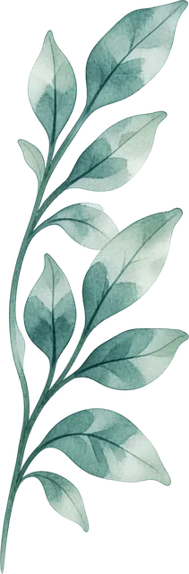
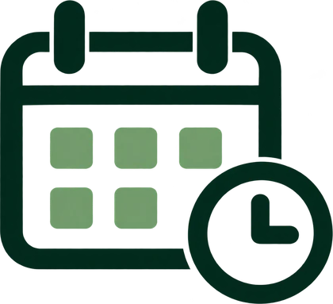

← 入口網站
會議系統


會議系統
會前先填議題，會中好記錄，會後有人追。
建立會議
重新整理
即將開會
待辦看板
歷史
我要提出議題
類型
標題（必填，30 字內）
說明（選填，幾句話就好）
希望會議幫我決定什麼
寫清楚想要大家決定的事，會議會更有效率。
預估需要幾分鐘
取消
送出
建立會議
會議主題（必填）
會議類型
開會日期
地點
開始
結束
議題徵集截止（日期）
截止時間
與會者
全選
全不選
已勾選
0
人
主持人
記錄人
取消
儲存
固定議題
標題
說明／報告內容
指定報告人（選填）
被指定的人會在徵集期間看到「請填報告內容」的提醒。
預估分鐘（選填）
取消
儲存
退回補充
請對方補充什麼？（一句話）
取消
退回
催填訊息
複製後貼到 LINE 群組。
關閉
複製文字
延後期限
延到哪一天
取消
儲存
取消
確定